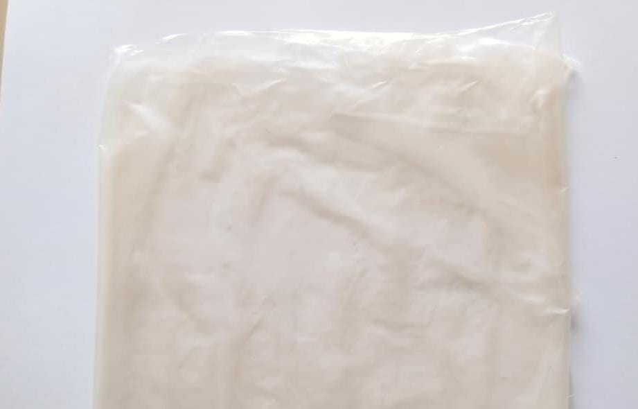

OUR RESEARCH RESULT
Bioplastic Film
The final product is an experimental bioplastic film made from tapioca starch, betel leaf extract, and silver nanoparticles (AgNPs). This research explores its potential as a biodegradable alternative material with possible antifungal properties.
- ✓ Tapioca starch-based material
- ✓ Contains betel leaf extract and AgNPs
- ✓ Potential anti fungal properties
- ✓ Potential for biodegradition